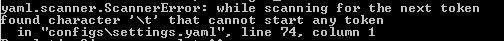

Application & Configuration¶
This section describes how to set up a new PopulationSim implementation.
In order to create a new PopulationSim implementation, the user must first understand the requirements of the project in terms of geographic resolution and details desired in the synthetic population. Once the requirements of the project have been established, the next step is to prepare the inputs to PopulationSim which includes seed population tables and geographic controls. Next, PopulationSim needs to be configured for available inputs and features desired in the final synthetic population. After this, the user needs to run PopulationSim and resolve any data related errors. Finally, the user should validate the output synthetic population against the controls to understand the precision of the synthetic population compared to controls and the amount of variance in the population for each control.
Selecting Geographies¶
PopulationSim can represent both household and person level controls at multiple geographic levels. Therefore the user must define what geographic units to use for each control. This is an art; there is not necessarily any ‘right’ way to define geographic areas or to determine what geographic level to use for each control. However, there are important considerations for selecting geography, discussed below.
Traditionally, travel forecasting models have followed the sequential four-step model framework. This required the modeling region to be divided into zones, typically the size of census block groups or tracts. The zones used in four-step process are typically known as Transportation Analysis Zones (TAZs). The spatial boundaries of TAZs varies across modeling region and ranges from a city block to a large area in the suburb within a modeling region. If building a synthetic population for a trip-based model, or an Activity-based model (ABM) whose smallest geography is the TAZ, then there is no reason to select a smaller geoegraphical unit than the TAZ for any of the controls.
Activity-based models (ABMs) operate in a micro-simulation framework, where travel decisions are modeled explicitly for persons and households in the synthetic population. Many ABMs (e.g., DaySim, CT-RAMP) operate at a finer spatial resolution than TAZs, wherein all location choices (e.g., usual work location, tour destination choice) are modeled at a sub-TAZ geography. This finer geography is typically referred to as Micro-Analysis Zones (MAZs) which are smaller zones nested within TAZs. Models that represent behavior at the MAZ level requires that MAZs are used as the lowest level of control, so that the synthetic population will identify the MAZ that each household resides in.
As discussed earlier, two main inputs to a population synthesizer are a seed sample and controls. The seed sample can come from a household travel survey or from American Community Survey (ACS) Public Use Microdata Sample (PUMS), with latter being the most common source. The PUMS data contains a sample of actual responses to the ACS, but the privacy of each household is protected by aggregating all household residential locations into relatively large regions called Public Use Microdata Areas (PUMAs). PUMAs are special non-overlapping areas that partition each state into contiguous geographic units containing no fewer than 100,000 people each. Some larger regions are composed of many PUMAs, while other, smaller regions have only one PUMA, or may even be smaller than a PUMA. It is not a problem to use PopulationSim to generate a synthetic population if the region is smaller than a PUMA; PopulationSim will ‘fit’ the PUMA-level population to regional control data as an initial step.
Often it is not possible or desirable to specify all the controls at the same level of geographic resolution. Some important demographic, socio-economic and land-use development distributions (e.g., employment or occupation data) which may be adopted for controls are only available at relatively aggregate geographies (e.g., County, District, Region, etc.). Moreover, some distributions which are available at a finer geographic level in the base year may not be available at the same geographic level for a future forecast year. In some cases, even if a control is available at a finer geography, the modeler might want to specify that control (e.g., population by age) at an aggregate geography due to concerns about accuracy, forecastability, etc.
The flexible number of geographies feature in PopulationSim enables user to make use of data available at different geographic resolutions. In summary, the choice of geographies for PopulationSim is decided based on following:
| Travel Model Spatial Resolution: | |
|---|---|
| For most ABMs, this is MAZ but can also be TAZ or even Block Group | |
| Availability of Control Data: | |
| Different controls are available at different geographic levels; some data is available at the block level (for example, total households), some data is avialable at the block group level, the tract level, the county level, etc. | |
| Accuracy of Control Data: | |
| Generally there is more error in data specified at smaller geographic units than larger geographic units | |
| Desired level of Control: | |
| It is possible that the user may not wish to control certain variables at a small geographic level, even if good base-year data were available. For example, the user may not have much faith in the ability to forecast certain variables at a small geogrphic level into the future. In such cases, the user may wish to aggregate available data to larger geographies. | |
| Seed Sample Geography: | |
| The level at which seed data is specified automatically determines one of the geographic level (the Seed level). | |
The hierarchy of geographies is important when making a decision regarding controls. The hierarchy of geographies in PopulationSim framework is as follows:
- Meta (e.g., the entire modeling region)
- Seed (e.g., PUMA)
- Sub-Seed (e.g., TAZ, MAZ)
The Meta geography is the entire region. Currently, PopulationSim can handle only one Meta geography. The Seed geography is the geographic resolution of the seed data. There can be one or more Seed geographies. PopulationSim can handle any number of nested Sub-Seed geographies. More information on PopulationSim algorithm can be found from the PopulationSim specifications in the Documents & Resources section.
Geographic Cross-walk¶
After selecting the geographies, the next step is to prepare a geographic cross-walk file. The geographic cross-walk file defines the hierarchical structure of geographies. The geographic cross-walk is used to aggregate controls specified at a lower geography to upper geography and to allocate population from an upper geography to a lower geography. An example geographic crosswalk is shown below:
| TAZ | BLOCK GROUP | TRACT | PUMA | REGION |
|---|---|---|---|---|
| 475 | 3 | 100 | 600 | 1 |
| 476 | 3 | 100 | 600 | 1 |
| 232 | 45 | 100 | 600 | 1 |
| 247 | 45 | 202 | 600 | 1 |
| 248 | 45 | 202 | 600 | 1 |
Preparing seed and control data¶
Seed sample¶
As mentioned in previous section, the seed sample is typically obtained from the ACS PUMS. One of the main requirements for the seed sample is that it should be representative of the modeling region. In case of ACS PUMS, this can be ensured by selecting PUMAs representing the modeling region both demographically and geographically. PUMA boundaries may not perfectly line up against the modeling region boundaries and overlaps are possible. Each sub-seed geography must be assigned to a Seed geography, and each Seed geography must be assigned to a Meta geography.
The seed sample must contain all of the specified control variables, as well as any variables that are needed for the travel model but not specified as controls. For population groups that use completely separate, non-overlapping controls, such as residential population and group-quarter population, separate seed samples are prepared. PopulationSim can be set up and run separately for each population segment using the same geographic system. The outputs from each run can be combined into a unified synthetic population as a post processing step.
Finally, the seed sample must include an initial weight field. The PopulationSim algorithm is designed to assign weights as close to the initial weight as possible to minimize the changes in distribution of uncontrolled variables. All the fields in the seed sample should be appropriately recoded to specify controls (see more details in next section). Household-level population variables must be computed in advance (for e.g., number of workers in each household) and monetary variables must be inflation adjusted to be consistent with year of control data (e.g., Household Income). The ACS PUMS data contain 3 or 5 years of household records, where each record’s income is reported in the year in which it was collected. The ACS PUMS data includes the rolling reference factor for the year and the inflation adjustment factor, these must be used to code each household’s income to a common income year.
Controls¶
Controls are the marginal distributions that form the constraints for the population synthesis procedure. Controls are also referred to as targets and the objective of the population synthesis procedure is to produce a synthetic population whose attributes match these marginal distributions. Controls can be specified for both household and person variables. The choice of control variables depends on the needs of the project. Ideally, the user would want to specify control for all variables that are important determinant of travel behaviour or would be of interest to policy makers. These would include social, demographic, economic and land-use related variables.
The mandatory requirement for a population synthesizer is to generate the right number of households in each travel model geography. Therefore, it is mandatory to specify a control on total number of households in each geographical unit at the lowest geographical level. If this control is matched perfectly, it ensures that all the upper geographies also have the correct number of households assigned to them.
There are multiple source to obtain input data to build these controls. Most commonly, base-year controls are built from Census data, including Summary Files 1, 2 and 3, the American Community Survey, and the Census Transportation Planning Package (CTPP). Data from Census sources are typically available at one of the Census geographies - Census Block, Block Group, Census Tract, County, Metropolitan Statistical Area, etc. The modeling agency may collect important demographic data for the modeling region (e.g., number of households). Some data can also be obtained from a socio-economic or land-use model for the region such as, households by income groups or households by housing type.
Once the data has been obtained, it may be necessary to aggregate or disaggregate the data to the desired geography. Disaggregation involves distributing data from the upper geography to lower geographies using a distribution based on area, population or number of households. A simple aggregation is possible when the lower geography boundaries fits perfectly within the upper geography boundary. In case of overlaps, data can be aggregated in proportion to the area. A simpler method is to establish a correspondence between the lower and upper geography based on the position of the geometric centroid of the lower geography. If the centroid of the lower geography lies within the upper geography then the whole lower geography is assumed to lie within the upper geography. For some shapes, the geometric centroid might be outside the shape boundary. In such cases, an internal point closest to the geometric centroid but within the shape is used. All Census shape files come with the coordinates of the internal point. The user would need to download the Census shape files for the associated geography and then establish a correspondence with the desired geography using this methodology. It is recommended that input control data should be obtained at the lowest geography possible and then aggregated to the desired geography. These steps must be performed outside of PopulationSim, typically using a Geographic Information System (GIS) software program or travel modeling software package with GIS capabilities.
Configuration¶
Below is PopulationSim’s directory structure followed by a description of inputs. To set up a PopulationSim run, the user must create this directory structure

PopulationSim is run using the batch file RunPopulationSim.bat. The user needs to update the path to the Anaconda install (Anaconda2 folder) on their computer. This batch file activates the populationsim environment and then calls the run_populationsim.py Python script to launch a PopulationSim run. Open the RunPopulationSim.bat file in edit mode and change the path to Anaconda install as follows (note: if there are spaces in the path, put quotes around the path):
:: USER INPUTS
:: ---------------------------------------------------------------------
:: Local Anaconda installation directory
SET ANACONDA_DIR=E:\path\to\this\directory\Anaconda2
:: ---------------------------------------------------------------------
PopulationSim is configured using the settings.YAML file. PopulationSim can be configured to run in base mode or repop mode.
| base mode: | The base configuration runs PopulationSim from beginning to end and produces a new synthetic population. |
|---|---|
| repop mode: | The repop configuration is used for repopulating a subset of zones for an existing synthetic population. The user has the option to replace or append to the existing synthetic population. These options are specified from the settings.YAML file, details can be found in the Configuring Settings File section. |
The following sections describes the inputs and outputs, followed by discussion on configuring the settings file and specifying controls.
Inputs & Outputs¶
Please refer to the following definition list to understand the file names:
| GEOG_NAME: | Sub-seed geography name such as TAZ, MAZ, etc. |
|---|---|
| SEED_GEOG: | Geographic resolution of the seed sample such as PUMA. |
| META_GEOG: | Geography name of the Meta geography such as Region, District, etc. |
Working Directory Contents:
| File | Description |
|---|---|
| RunPopulationSim.bat | Batch file to run PopulationSim |
| run_populationsim.py | Python script that orchestrates a PopulationSim run |
| /configs | Sub-directory containing control specifications and configuration settings |
| /data | Sub-directory containing all input files |
| /output | Sub-directory containing all outputs, summaries and intermediate files |
/configs Sub-directory Contents:
| File | Description |
|---|---|
| logging.yaml | YAML-based file for setting up logging |
| settings.yaml | YAML-based settings file to configure a PopulationSim run |
| controls.csv | CSV file to specify controls |
/data Sub-directory Contents:
| File | Description |
|---|---|
| control_totals_GEOG_NAME.csv | Marginal control totals at each spatial resolution named GEOG_NAME |
| geo_crosswalk.csv | Geographic cross-walk file |
| seed_households.csv | Seed sample of households |
| seed_persons.csv | Seed sample of persons |
/output Sub-directory Contents (populated at the end of a PopulationSim run):
This sub-directory is populated at the end of the PopulationSim run. The table below list all possible outputs from a PopulationSim run. The user has the option to specify the output files that should be exported at the end of a run. Details can be found in the Configuring Settings File section.
| File | Group | Description |
|---|---|---|
| asim.log | Logging | Log file |
| pipeline.h5 | Data Pipeline | HDF5 data pipeline which stores all the inputs, outputs and intermediate files |
| expanded_household_ids.csv | Final Synthetic Population | List of expanded household IDs with their geographic assignment. User would join this file with the seed sample to generate a fully expanded synthetic population |
| synthetic_households.csv | Final Synthetic Population | Fully expanded synthetic population of households. User can specify the attributes to be included from the seed sample in the settings.YAML file |
| synthetic_persons.csv | Final Synthetic Population | Fully expanded synthetic population of persons. User can specify the attributes to be included from the seed sample in the settings.YAML file |
| incidence_table.csv | Intermediate | Intermediate incidence table |
| household_groups.csv | Intermediate | Unique household group assignments based on controls variables |
| GEOG_NAME_control_data.csv | Intermediate | Input control data at each geographic level - GEOG_NAME |
| GEOG_NAME_controls.csv | Intermediate | Control totals at each geographic level (GEOG_NAME) containing only the controls specified in the configs/controls.csv control specification file |
| GEOG_NAME_weights.csv | Intermediate | List of household weights with their geographic assignment |
| GEOG_NAME_weights_sparse.csv | Intermediate | List of household weights with their geographic assignment |
| control_spec.csv | Intermediate | Control specification used for the run |
| geo_cross_walk.csv | Intermediate | Input geographic cross-walk |
| crosswalk.csv | Intermediate | Trimmed geographic cross-walk used in PopulationSim run |
| trace_GEOG_NAME_weights.csv | Tracing | Trace file listing household weights for the trace geography specified in settings |
| summary_hh_weights.csv | Summary | List of household with weights through different stages of PopulationSim |
| summary_GEOG_NAME.csv | Summary | Marginal Controls vs. Synthetic Population Comparison at GEOG_NAME level |
| summary_GEOG_NAME_aggregate.csv | Summary | Household weights aggregate to SEED_GEOG at the end of allocation to GEOG_NAME |
| summary_GEOG_NAME_SEED_GEOG.csv | Summary | Marginal Controls vs. Synthetic Population Comparison at SEED_GEOG level using weights from allocation at GEOG_NAME level |
Configuring Settings File¶
PopulationSim is configured using the configs/settings.YAML file. The user has the flexibility to specify algorithm functionality, list geographies, invoke tracing, provide inputs specifications, select outputs and list the steps to run. The settings shown below are from the PopulationSim application for the CALM region as an example of how a run can be configured. The meta geography for CALM region is named as Region, the seed geography is PUMA and the two sub-seed geographies are TRACT and TAZ. The settings below are for this four geography application, but the user can configure PopulationSim for any number of geographies and use different geography names.
Some of the setting are configured differently for the repop mode. The settings specific to the repop mode are described in the Configuring Settings File for repop Mode section.
Algorithm/Software Configuration:
These settings control the functionality of the PopulationSim algorithm. The settings shown are currently the defaults as they were the ones used to validate the final PopulationSim application for the CALM region. They should not be changed by the casual user, with the possible exception of the max_expansion_factor setting, as explained below.
INTEGERIZE_WITH_BACKSTOPPED_CONTROLS: True
SUB_BALANCE_WITH_FLOAT_SEED_WEIGHTS: False
GROUP_BY_INCIDENCE_SIGNATURE: True
USE_SIMUL_INTEGERIZER: True
USE_CVXPY: False
max_expansion_factor: 30
| Attribute | Value | Description |
|---|---|---|
| INTEGERIZE_WITH_BACKSTOPPED_CONTROLS | True/False | When set to True, upper geography controls are imputed for current geography and used as additional controls for integerization |
| SUB_BALANCE_WITH_FLOAT_SEED_WEIGHTS | True/False | When True, PopulationSim uses floating weights from upper geography |
| GROUP_BY_INCIDENCE_SIGNATURE | True/False | When True, PopulationSim groups the household incidence by HH group |
| USE_SIMUL_INTEGERIZER | True/False |
for more details, refer the TRB paper on Docs page |
| USE_CVXPY | True/False | A third-party solver is used for integerization - CVXPY or or-tools CVXPY is currently not available for Windows |
| max_expansion_factor | > 0 | Maximum HH expansion factor weight setting. This settings dictates the ratio of the final weight of the household record to its initial weight. For example, a maxExpansionFactor setting of 5 would mean a household having a PUMS weight of x can have a final weight of not more than 5x, thus effectively restricting the number of times a record can be sampled. The user might need to adjust this setting to enable sampling of a record with a rare household configuration. Otherwise, it might result in some controls not being matched due to unavailability of records to sample from. The maximum expansion factor may have to be adjusted upwards if the target is much greater than the seed number of households. |
Geographic Settings:
geographies: [REGION, PUMA, TRACT, TAZ]
seed_geography: PUMA
| Attribute | Value | Description |
|---|---|---|
| geographies | List of geographies | List of geographies at which the controls are specified including the seed geography - PUMA. The geographies should be in the hierarchical order: REGION >> PUMA >> TRACT >> TAZ >> … Any number of geographies are allowed These geography names should be used as prefixes in control data file names for the corresponding geographies. Note that number of sub-seed geographies are flexible. Each must be listed in the run_list settings, shown below. |
| seed_geography | PUMA | Seed geography name from the list of geographies |
Tracing:
Currently, only one unit can be listed. Only geographies below the seed geography can be traced.
trace_geography:
TAZ: 100
TRACT: 10200
| Attribute | Description |
|---|---|
| TAZ | TAZ ID that should be traced. |
| TRACT | TRACT ID that should be traced. |
data directory:
data_dir: data
| Attribute | Description |
|---|---|
| data_dir | Name of the data_directory within the working directory. Do not change unless the directory structure changes from the template. |
Input Data Tables
This setting is used to specify details of various inputs to PopulationSim. Below is the list of the inputs in the PopulationSim data pipeline:
- Seed-Households
- Seed-Persons
- Geographic CrossWalk
- Control data at each control geography
Note that Seed-Households, Seed-Persons and Geographic CrossWalk are all required tables and must be listed. There must be a control data file specified for each geography other than seed. For each input table, the user is required to specify an import table name, input CSV file name, index column name and column name map (only for renaming column names). The user can also specify a list of columns to be dropped from the input synthetic population seed data. An example is shown below followed by description of attributes.
input_table_list:
- tablename: households
filename : seed_households.csv
index_col: hh_id
column_map:
hhnum: hh_id
- tablename: persons
filename : seed_persons.csv
column_map:
hhnum: hh_id
SPORDER: per_num
# drop mixed type fields that appear to have been incorrectly generated
drop_columns:
- indp02
- naicsp02
- occp02
- socp00
- occp10
- socp10
- indp07
- naicsp07
- tablename: geo_cross_walk
filename : geo_cross_walk.csv
column_map:
TRACTCE: TRACT
- tablename: TAZ_control_data
filename : control_totals_taz.csv
- tablename: TRACT_control_data
filename : control_totals_tract.csv
- tablename: REGION_control_data
filename : scaled_control_totals_meta.csv
| Attribute | Description |
|---|---|
| tablename | Name of the imported CSV file in the PopulationSim data pipeline. The input
|
| filename | Name of the input CSV file in the data folder |
| index_col | Name of the unique ID field in the seed household data |
| column_map | Column map of fields to be renamed. The format for the column map is as follows: Name in CSV: New Name |
| drop_columns | List of columns to be dropped from the input data |
PopulationSim requires that the column names must be unqiue across all the control files. In case there are duplicate column names in the raw control files, user can use the column map feature to rename the columns appropriately.
Reserved Column Names:
Three columns representing the following needs to be specified:
- Initial weight on households
- Unique household identifier
- Control on total number of households at the lowest geographic level
household_weight_col: WGTP
household_id_col: hh_id
total_hh_control: num_hh
| Attribute | Description |
|---|---|
| household_weight_col | Initial weight column in the household seed sample |
| household_id_col | Unique household ID column in the household seed sample used to identify which persons are in which household. Should have same name as the index column on household seed table |
| total_hh_control | Total number of household control at the lowest geographic level. Note that PopulationSim requires this control to be specified at the lowest geography. It is strictly enforced |
Control Specification File Name:
The control specification file is specified using a different token name for the repop mode as shown below.
control_file_name: controls.csv
| Attribute | Description |
|---|---|
| control_file_name | Name of the CSV control specification file |
Output Tables:
The output_tables: setting is used to control which outputs to write to disk. The Inputs & Outputs section listed all possible outputs. The user can specify either a list of output tables to include or to skip using the action attribute as shown below in the example. if neither is specified, then all output tables will be written. The HDF5 data pipeline and all summary files are written out regardless of this setting.
output_tables:
action: include
tables:
- expanded_household_ids
| Attribute | Description |
|---|---|
| action | include or skip the list of tables specified |
| tables | List of table to be written out or skipped |
Synthetic Population Output Specification
This setting allows the user to specify the details of the expanded synthetic population. User can specify the output file names, household ID field name and the set of columns to be included from the seed sample.
output_synthetic_population:
household_id: household_id
households:
filename: synthetic_households.csv
columns:
- NP
- AGEHOH
- HHINCADJ
- NWESR
persons:
filename: synthetic_persons.csv
columns:
- per_num
- AGEP
- OSUTAG
- OCCP
| Attribute | Description |
|---|---|
| household_id | Column name of the unique household ID field in the expanded synthetic population |
| filename | CSV file names for the expanded households and persons table |
| columns | Names of seed sample columns to be included in the final synthetic population. Missing or misspelled column names generate error. The geographic allocation information of each household is added by default. |
Steps for base mode:
This setting lists the sub-modules or steps to be run by the PopulationSim orchestrator. The ActivitySim framework allows user to resume a PopulationSim run from a specific point. This is specified using the attribute resume_after. The step, sub_balancing.geography is repeated for each sub-seed geography (the example below shows two, but there can be 0 or more).
run_list:
steps:
- input_pre_processor
- setup_data_structures
- initial_seed_balancing
- meta_control_factoring
- final_seed_balancing
- integerize_final_seed_weights
- sub_balancing.geography=TRACT
- sub_balancing.geography=TAZ
- expand_households
- write_results
- summarize
#resume_after: integerize_final_seed_weights
| Attribute | Description |
|---|---|
| steps | List of steps to be run |
| resume_after | The step from which the current run should resume |
For detailed information on software implementation refer to Core Components and Model Steps. The table below gives a brief description of each step.
| Step | Description |
|---|---|
| input_pre_processor | Read input text files and save them as pipeline tables for use in subsequent steps. |
| setup_data_structures | Builds data structures such as incidence_table. |
| initial_seed_balancing | Balance the household weights for each of the seed geographies (independently) using the seed level controls and the aggregated sub-zone controls totals. |
| meta_control_factoring | Apply simple factoring to summed household fractional weights based on original meta control values relative to summed household fractional weights by meta zone. |
| final_seed_balancing | Balance the household weights for each of the seed geographies (independently) using the seed level controls and the aggregated sub-zone controls totals. |
| integerize_final_seed_weights | Final balancing for each seed (puma) zone with aggregated low and mid-level controls and distributed meta-level controls. |
| sub_balancing | Simul-balance and integerize all zones at a specified geographic level in groups by parent zone. |
| expand_households | Create a complete expanded synthetic household list with their assigned geographic zone ids. |
| write_tables | Write pipeline tables as csv files (in output directory) as specified by output_tables list in settings file. |
| write_synthetic_population | Write synthetic households and persons tables to output directory as csv files. |
| summarize | Write aggregate summary files of controls and weights for all geographic levels to output dir |
Configuring Settings File for repop Mode¶
This sections describes the settings that are configured differently for the repop mode.
Input Data Tables for repop mode
The repop mode runs over an existing synthetic population and uses the data pipeline (HDF5 file) from the base run as an input. User should copy the HDF5 file from the base outputs to the output folder of the repop set up. The data input which needs to be specified in this setting is the control data for the subset of geographies to be modified. Input tables for the repop mode can be specified in the same manner as base mode. However, only one geography can be controlled. In the example below, TAZ controls are specified. The controls specified in TAZ_control_data do not have to be consistent with the controls specified in the data used to control the initial population. Only those geographic units to be repopulated should be specified in the control data (for example, TAZs 314 through 317).
repop_input_table_list:
- taz_control_data:
filename : repop_control_totals_taz.csv
tablename: TAZ_control_data
Control Specification File Name for repop mode:
repop_control_file_name: repop_controls.csv
| Attribute | Description |
|---|---|
| repop_control_file_name | Name of the CSV control specification file for repop mode |
Output Tables for repop mode:
It should be noted that only the summary_GEOG_NAME.csv summary file is available for the repop mode.
Steps for repop mode:
When running PoulationSim in repop mode, the steps specified in this setting are run. As mentioned earlier, the repop mode runs over an existing synthetic population. The default value for the resume_after setting under the repop mode is summarize which is the last step of a base run. In other words, the repop mode starts from the last step of the base run and modifies the base synthetic population as per the new controls. The user can choose either append or replace in the expand_households.repop attribute to modify the existing synthetic population. The append option adds to the existing synthetic population in the specified geographies, while the replace option replaces any existing synthetic population with newly synthesized population in the specified geographies.
run_list:
steps:
- input_pre_processor.repop
- repop_setup_data_structures
- initial_seed_balancing.final=true
- integerize_final_seed_weights.repop
- repop_balancing
# expand_households options are append or replace
- expand_households.repop;replace
- summarize.repop
- write_synthetic_population.repop
- write_tables.repop
resume_after: summarize
| Attribute | Description |
|---|---|
| steps | List of steps to be run Two options for the expand_households.repop step 1. append 2. replace |
| resume_after | The step from which the current run should resume |
For information on software implementation of repop balancing refer to repop_balancing.
Specifying Controls¶
The controls for a PopulationSim run are specified using the control specification CSV file. Following the ActivitySim framework, Python expressions are used for specifying control constraints. An example file is below.
| target | geography | seed_table | importance | control_field | expression |
|---|---|---|---|---|---|
| num_hh | TAZ | households | 100000000 | HHBASE | (households.WGTP > 0) & (households.WGTP < np.inf) [1] |
| hh_size_4_plus | TAZ | households | 5000 | HHSIZE4 | households.NP >= 4 |
| hh_age_15_24 | TAZ | households | 500 | HHAGE1 | (households.AGEHOH > 15) & (households.AGEHOH <= 24) |
| hh_inc_15 | TAZ | households | 500 | HHINC1 | (households.HHINCADJ > -999999999) & (households.HHINCADJ <= 21297) |
| student_fam_housing | TAZ | persons | 500 | OSUFAM | persons.OSUTAG == 1 |
| hh_wrks_3_plus | TRACT | households | 1000 | HHWORK3 | households.NWESR >= 3 |
| hh_by_type_sf | TRACT | households | 1000 | SF | households.HTYPE == 1 |
| persons_occ_8 | REGION | persons | 1000 | OCCP8 | persons.OCCP == 8 |
| [1] | np.inf is the NumPy constant for infinty |
Attribute definitions are as follows:
| target: | target is the name of the control in PopulationSim. A column by this name is added to the seed table. Note that the total_hh_control: target must be present in the control specification file. All other controls are flexible. |
|---|---|
| geography: | geography is the geographic level of the control, as specified in geographies. |
| seed_table: | seed_table is the seed table the control applies to and it can be households or persons. If persons, then persons are aggregated to households using the count operator. |
| importance: | importance is the importance weight for the control. A higher weight will cause PopulationSim to attempt to match the control at the possible expense of matching lower-weight controls. |
| control_field: | control_field is the field in the control data input files that this control applies to. |
| expression: | expression is a valid Python/Pandas expression that identifies seed households or persons that this control applies to. The household and persons fields used for creating these expressions should exist in the seed tables. User might need to pre-process the seed sample to create the variable required in these expressions. These expressions can be specified for both discrete and continuous variables. For most applications, this involves creating logical relationships such as equalities, inequalities and ranges using the standard logical operators (AND, OR, EQUAL, Greater than, less than). |
- Some conventions for writing expressions:
- Each expression is applied to all rows in the table being operated upon.
- Expressions must be vectorized expressions and can use most numpy and pandas expressions.
- When editing the CSV files in Excel, use single quote ‘ or space at the start of a cell to get Excel to accept the expression
Error Handling & Debugging¶
It is recommended to do appropriate checks on input data before running PopulationSim.
Checks on data inputs¶
While the PopulationSim algorithm is designed to work even with imperfect data, an error-free and consistent set of input controls guarantees optimal performance. Poor performance and errors are usually the result of inconsistent data and it is the responsibility of the user to do necessary QA/QC on the input data. Some data problems that are frequently encountered are as follows:
- Miscoding of data
- Inconsistent controls (for example, household-level households by size controls do not match person-level controls on total persons, or household-level workers per household controls do not match person-level workers by occupation)
- Controls do not add to total number of households
- Controls do not aggregate consistently across geographies
- missing or mislabelled controls
Common run-time errors¶
Below is a list of common run-time errors:
Tabs in settings.YAML file
User should not use /t (tabs) while configuring the settings.YAML file. Presence of /t would result in the error shown below. {SPACE} should be used for indenting purposes and hard returns at the end of each line.
